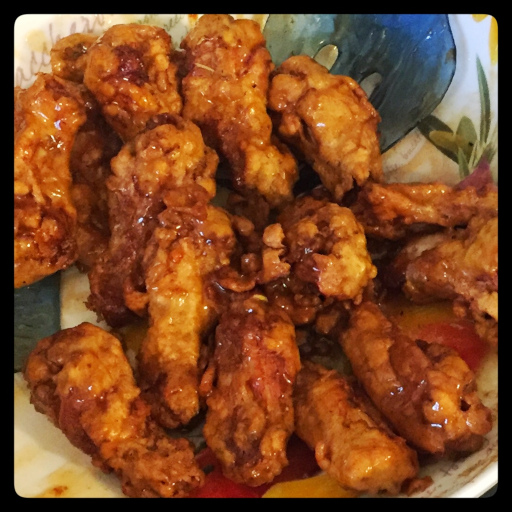

Trimmed down and dressed up, sweet and spicy, crispy and sticky all in one.

chicken wings
corn starch or flour
cumin
paprika
curry powder
poultry seasoning
rosemary
thyme
garlic powder
salt
pepper
honey
soy sauce
chili flakes or sriracha
garlic
ginger
lime juice
Trim as much skin as possible off the wings. Place a knife against the edge of the wing and pull the skin under the knife, keeping the knife straight up, perpindicular to the cutting board. Let the wing roll as the skin is pulled.
In a bowl big enough to toss the chicken, mix corn starch or flour (~2 Tbsps/dozen wings), cumin, paprika, cury powder, poultry seasoning, rosemary, thyme, garlic powder, salt, pepper. Toss the chicken until coated.
Deep fry or bake the wings until fully cooked.
While wings are cooking, in a saucepan slowly bring honey, soy sauce, sriracha, lime juice, garlic and ginger to a boil.
Put the wings in a large bowl, douse them in the sauce, and toss to coat. The light dusting batter will start to absorb the sauce, so eat them quick while they retain a little crunch.